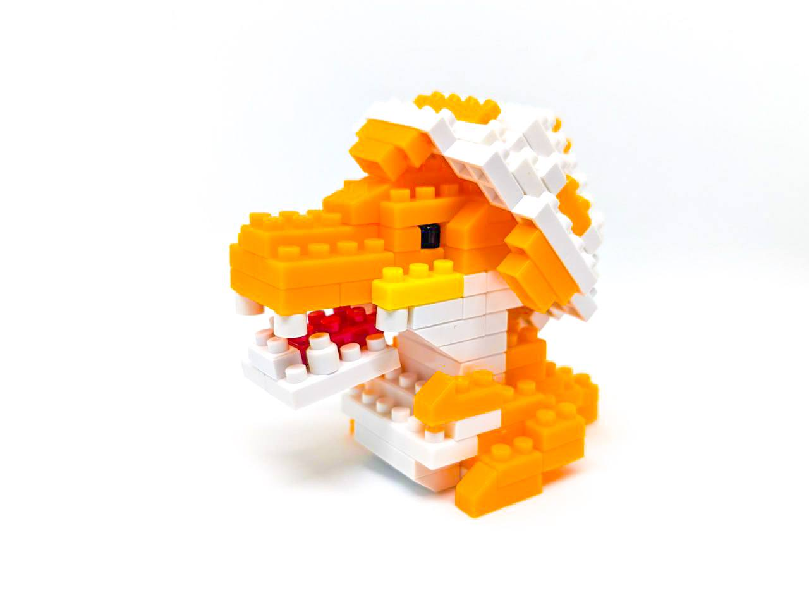

|
|


|
|
1
2
3
4
5
6
7
8
9
10
11
12

|
Dinosaur Friends SeriesTyrannosaurus BabyJanuary 17th, 2024, 05:17 pm Happy Birthday to this cute baby dino and also my big sis today!..... This baby dino looks so cute! Don't you agree? With its eggshell for a hat! I recommend my fellow petite friends to sneak this baby in with the other eggs during easter! It would definitely make a suprising easter egg! XD
The Unboxing: Quality and First ImpressionsThe Dinosaur Friends Series: Tyrannosaurus Baby model comes with a cheerful mix of colors: orange, white, red and yellow for the baby dino, white and orange spots for the eggshell, and tiny black blocks for the eyes. The instructions are straightforward and easy to follow, perfect for beginners or anyone looking for a lighthearted project. To me, this baby dino reminds me of a character in an old anime me and my sister watched in our childhood, Agumon from the anime Digimon. Sooo, I decided to gift this to my sister, and the review will be from my sister's perspective! (She's a beginner at building mini blocks) I gave this kit to my sister and she was ecstatic! We immediately decided to build it (me standing by the side and looking over her building the model). First, what stands out about this kit is definitely its playful design. The little eggshell perched on the dino’s head gives it a whimsical personality that feels perfect for display—or as a fun Easter decoration, as I mentioned! Watch this relaxing timelapse video below to see my sis building it! Instruction ManualDifficulty: ⭐⭐ Building the Tyrannosaurus BabyThe build started by making parts of the body separately which is the head, lower jaw, the body and the egg shell. The first step was to build the head, and then later we attach the jaw and body. The fact that the model did not have detailed features was a very excellent design idea because it managed to capture its cute stubby, baby-like proportions. As the parts came together, the little Tyrannosaurus began to take shape, complete with its movable jaw and a cheerful, upright posture. The eggshell hat was definitely the highlight of this build. Placing the white blocks to form the cracked edges of the shell required precision, but it wasn’t overly challenging that my sister couldn't do. In fact, it added just enough complexity to keep things interesting. Once she added the final piece to the top of the head, the whole model felt like it had its own personality—a baby dinosaur full of curiosity and charm. While the model is adorable on its own, there’s always room for creativity. For this build, we gave the baby dino a slightly tilted eggshell hat, making it look even more mischievous. For this build, I gave my sister the honor of placing the stars of difficulty. She said the build was straightforward and easy but challenging enough that she wasn't bored while building it. She give it a 2 out of 3 stars in difficulty! Her Tips!1. Sort Your Pieces First: With models that have different parts like this, organizing your blocks by color can save time and avoid confusion. 2. Check your steps and block alignment: As you build, you could have missed one or two steps in the process so it would be a good idea to double check your blocks before moving to the next step. 3. Have Fun Posing Once the build is complete, experiment with different poses to find the one that feels most dynamic to you.
Do you love building Petite Blocks as much as I do? I’d love to hear your thoughts, tips, and experiences! If you’ve tackled the Tyrannosaurus Baby model—or if you have requests or questions—reach out to me on X at @nikilikespuchiburokku. Let’s keep the Petite Block community growing, one tiny block at a time. . . . If you're in my area and you're interested in buying this model, here's a map to guide you! |